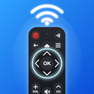
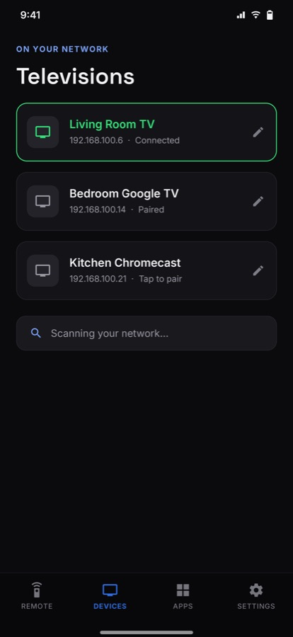
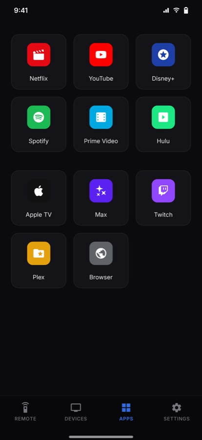

TV RemoteAndroid TV & Google TV remote for iPhone
Have an iPhone and an Android TV or Google TV? Control it from your phone over Wi-Fi. Free, with keyboard and voice search.
★★★★★ Rated 4.6 on the App Store and 5.0 on Google Play
Free. Your phone and TV need to be on the same Wi-Fi.



Works with
- Google TV and Android TV televisions from Sony, TCL, Philips, Xiaomi, Hisense, Sharp and others
- NVIDIA SHIELD
- Chromecast with Google TV
- Chromecast without Google TV: volume, mute and playback only
How to connect
- Connect your iPhone to the same Wi-Fi as your TV.
- Open the app. When iPhone asks, allow Local Network access.
- Tap your TV. A six-character code appears on the TV screen.
- Type the code in the app. You only do this once.
No remote needed: the code appears on the TV by itself, so you can pair even if the original remote is lost.
What you can do
- Full remote: D-pad, OK, back, home, volume, mute and power
- Type searches and passwords with your iPhone's keyboard
- Voice search
- Shortcuts to Netflix, YouTube, Prime Video and Disney+
Also available for Android phones.
Questions
I tapped Don't Allow for Local Network. How do I fix it?
Open iPhone Settings, scroll down to the app, and turn on Local Network. Then open the app again. The app also has an Open iPhone Settings button for this.
Is this the same as the Google TV app?
No. This is an independent app. It needs no Google account and also works with Samsung, LG, Roku and Hisense TVs.
Why can't the app find my TV?
Your phone and TV must be on the same Wi-Fi network, not a guest network or mobile data. The TV must be switched on and connected to Wi-Fi. On iPhone, also open Settings, find the app and turn on Local Network: without it, iPhone blocks the app from seeing anything on your network.
Is it free?
Yes. Every feature is free and the app is supported by ads. On iPhone you can remove ads with a subscription or a one-time purchase.
Does it use infrared?
No. It works over Wi-Fi, so you don't need to point your phone at the TV, and it works from another room.
Which TVs are not supported?
Fire TV and Vizio TVs are found but cannot be controlled yet. Very old smart TVs (around 2014 and earlier) may not answer at all.
Is my data sent anywhere?
No. Commands go straight from your phone to your TV over your own network. There is no account and no server in between.
At a glance
- What it is: a free app that turns your phone into a Wi-Fi remote for your TV.
- iPhone and iPad: "TV Remote for Google & Android" on the App Store.
- Android phones: "Remote for LG TV & More" on Google Play. Same app, same features.
- TVs: Samsung (Tizen, 2016+), LG (webOS), Roku, Hisense and Toshiba VIDAA, and Android TV / Google TV (Sony, TCL, Philips, Xiaomi, NVIDIA SHIELD, Chromecast with Google TV).
- Not supported yet: Fire TV, Vizio, and older LG NetCast TVs.
- Needs: phone and TV on the same Wi-Fi. No account, no infrared, no extra hardware.
- Cost: free with ads; on iPhone, ads can be removed with a purchase.
Last updated 2026-11-23.